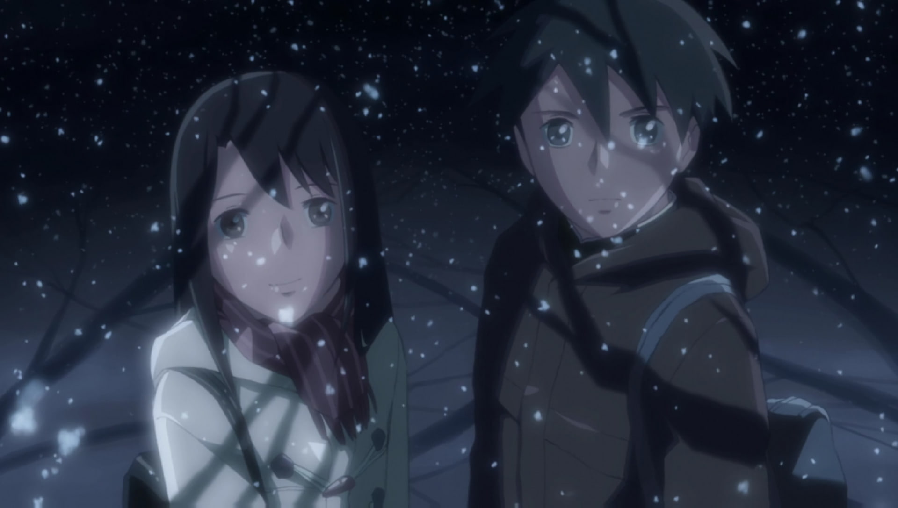

Cherry Blossom Story: Toono Takaki e Shinohara Akari conheceram-se na escola primária e
tornaram-se muito próximos, mas ela teve de se mudar com a família para uma região longe de
Tóquio.
Cosmonaut: Anos depois, Sumita Kanae está apaixonada por Takaki, colega dela, mas
este parece ter a mente sempre num local distante.
5 Centimeters per Second: De volta a
Tóquio, Takaki, agora adulto, debate-se com melancólicas memórias do passado e entra em ruptura com
as suas relações sentimentais.
Akari Shinohara|Takaki Toono

Uma das partes mais relevante dos filmes são suas trilhas sonoras que proporcionam a imerção na
trama.
Elas são divididas em 3 partes sendo ela abertura(opening),tema(main song) e
final(ending)
Opening (Yumetourou)
Main Song (sparkle)
Ending (Nandemonaiya)
Se você ja viu sobre os filmes responda o
Formulario